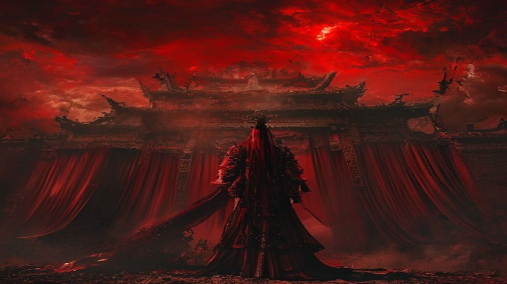
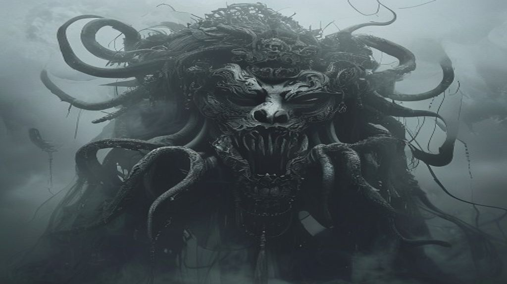
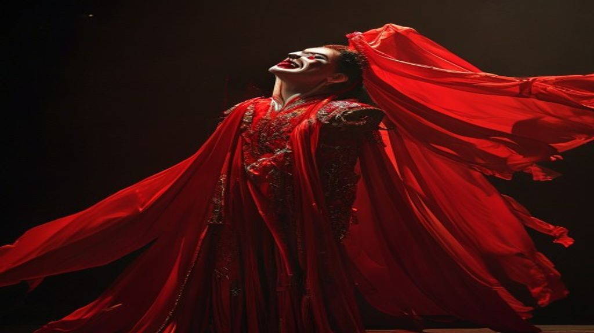
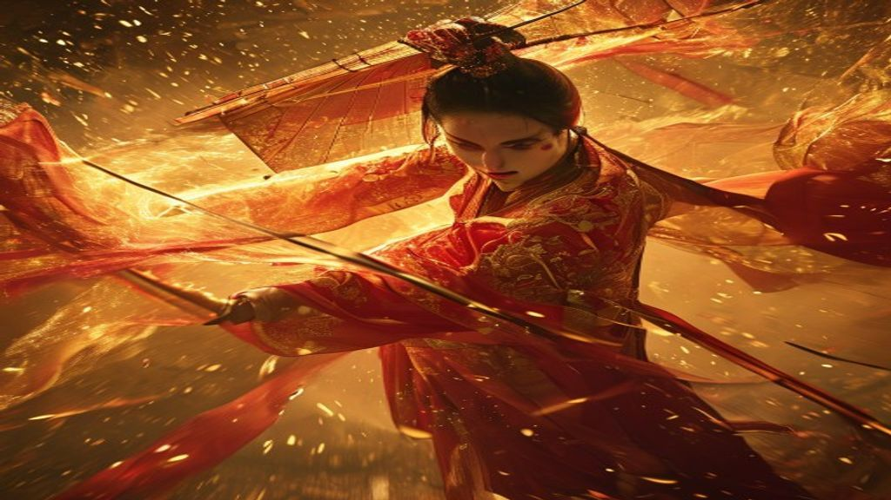
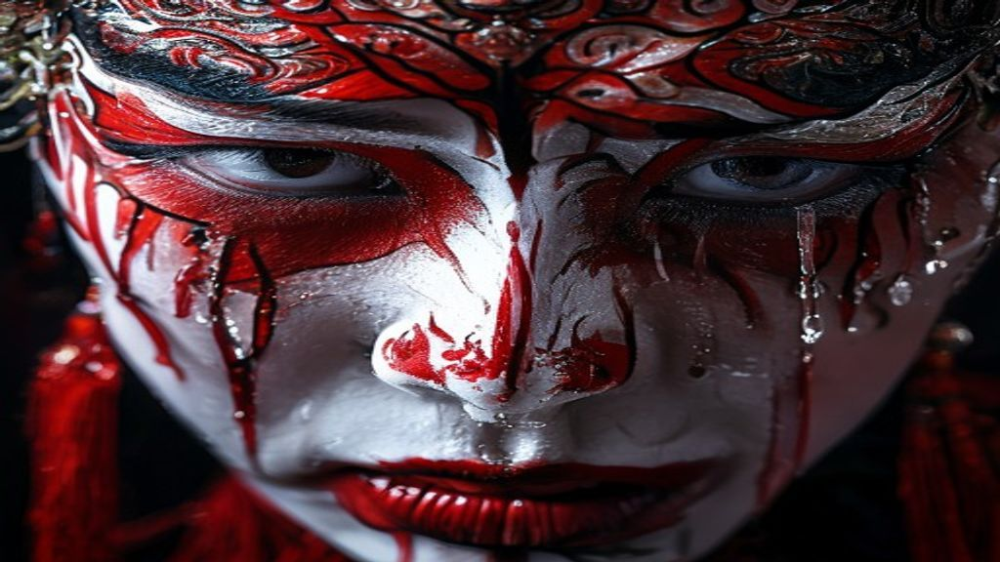
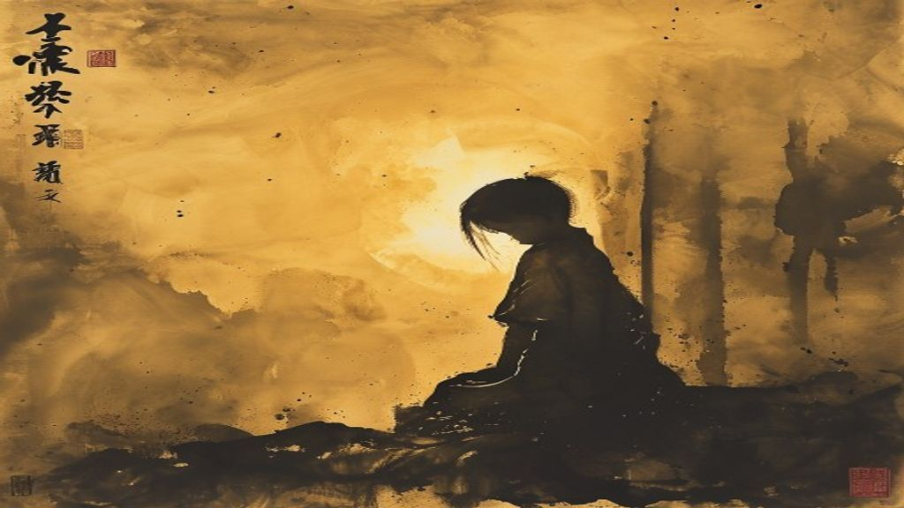

三九音域 · 番茄小说殿堂作家 · 400万字爆款网文 | 分镜脚本 + AI 关键帧

（无配音，仅音效炸裂 + 大字浮现）
「当人类文明崩塌
表演是唯一的生存方式」

番茄9.8分，四百万人在读！三九音域继《斩神》后的封神之作——《我不是戏神》！
赤色流星毁灭科技文明，灰界与人类界域重叠。末世废土之下，主角陈伶体内绑定一座神秘戏院——观众期待值，决定他的生死！

他独走「戏神道」。唱念做打化为战斗技能，戏曲选段取材真实曲目。传统文化在废土中杀出一条血路！
红帔时笑时哭，疯批演员型人格——"越看越觉得主角才是反派，好疯好爱！"

十四条神道体系贯穿世界，戏神道独辟蹊径。苏绣、醒狮、戏曲——非遗元素在末世废土中绽放异彩。
"观众期待值"的设定神来之笔——社交媒体时代，你体内的「观众」有几位？

但这不只是一部爽文。宿命感拉满的悲剧美学，伏笔如蛛网密布，反转层层递进。
陈伶——"伶"既是伶人，也是孤苦伶仃。命不由己的个体，在极致恶中挣扎着维持人性。

从一个人的表演，到全人类的觉醒——
"极光君不是人类的未来，
所有人类才是。"
这个时代，人命渺如尘埃；
这个时代，人类灿若星辰。
《我不是戏神》
你敢上台吗？
| 总时长 | 约 60 秒 |
| BGM | 戏曲腔混电子节拍（推荐《赤伶》remix / 国风暗黑系） |
| 风格 | 快节奏解说 + 氛围画面混剪 |
| 适用平台 | 抖音 / 快手 / 小红书 / B站 |
| 关键帧 | AI 生成 (Pollinations.ai) — 6 张 1024x576 |
| 配音 | 需人工录制或 TTS（推荐剪映内置配音 / ElevenLabs） |